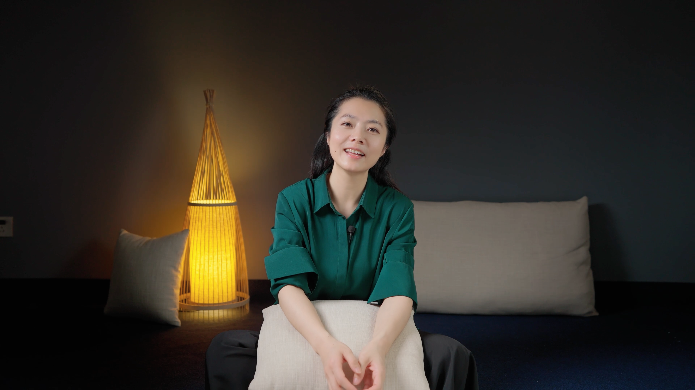

意公子
把古人的故事，
讲进今天的生活。
有趣从哪里来，信任怎样建立？
公开资料与作品研究 / 2026.10.12

来源：《中国新闻发布》／五洲期刊中心 ↗
先认清她是谁，
再看她怎么讲。
公开姓名吴敏婕，意外艺术创始人。她的内容不只有艺术知识，也包括人物故事、文化经典、个人体验与访谈。理解她，要把职业积累、个人表达与团队生产放在一起。
她的入口常是一个
“我也遇到过”的问题。
人物和经典，为它提供
另一种理解生活的方式。
这是对五个完整音频样本与主号目录的分析，尚不能代表每一条作品。需要分别考察问题、叙事、声音和画面怎样作用于观看体验。
- 抖音号
- 903672930
- 简介
- 中华文化，滋养身心。
- 获赞
- 5411.6万
- B站
- UID 1929837001 · 官方账号
- 星图粉丝
- 819w 与抖音有差异
星图与抖音字段差异未核出原因，保留两种计数。
来源：《中国新闻发布》／五洲期刊中心 ↗
在镜头前，
也在真实的公共生活里。
节目让人物与经典变得可亲近；公开采访和活动则提供职业经历的另一组证据。照片帮助确认场景，不能替代对作品和观点的判断。
来源：上观新闻／文汇报 ↗
找到一条，
再进入一个系列。
361条主号卡片来自同一公开主页；另附5支B站音频深读。系列标签按文案粗分，便于检索；发布日期未核会直接标出来。不同平台的指标分别记录。
数字ID不用于推算日期。“去主号查找”按钮不冒充原片链接。部分抖音页在嵌入浏览器可能空白，建议复制链接到已登录的Chrome；本档不承诺平台访问稳定。
感动的背后，
有具体的组织方法。
以下以全时长音频转写与文字分析为依据。时间点可点击回B站原片核对；没有把自动转写当准确逐字稿，也没有宣称完整看过画面。每支都保留值得质疑的地方。
从材料到故事，
从故事到共鸣。
每一种方法都有成立的条件和失败的可能。下列机制来自具体样本与公开自述，附成立条件、反例和可验证的比较方式。
报价能取得，
收入仍须证据。
本轮已读取巨量星图作者页。两个价格属于不同交付产品；订单按平台窗口记录。广告实际成交、税、抽成、公司成本与个人所得均没有结算资料。
平台展示的挂牌价
交付细则、实际成交与最终实收未核。
另一类产品的挂牌价
不能用它乘以猜测的广告数量，推成年度收入。
把短视频里的理解，
带进更长的阅读。
《人生得遇苏东坡》有大陆版和繁体版。图中为三采繁体限量版套装，不能与大陆普通版混用版本、日期或销量口径。
来源：三采文化 ↗
四条作品，表现并不平均。
飞瓜分析区近30天显示4条发布作品；点赞约14.1万、评论5705、分享9552。济南一条约占四条显示点赞的74%，平均值与中位数因而差距明显。
作品互动为界面可见累计值，不能当作这30天新增量。分析区截止10月10日，列表注明截止10月11日；四条都发布于9月28—30日。部分点赞按“万”显示，条形图近似比较。
飞瓜数据经现有共享入口读取；页面更新于2026.10.11 18:54:45。种草页加载异常，合作品牌识别名单未取得。三种受众画像已分别补读。
关注她的人，
和看到视频的人。
飞瓜分列粉丝、视频观众和直播观众。切换统计对象，看看性别、年龄与地域怎样变化。
界面未标画像的样本时间窗口、样本量及去重定义。地域按一位小数显示，前三合计摘要按两位显示；保留各自精度。直播画像有数值，不能证明近30天发生过直播。消费品牌偏好属于受众分析，不能当作作者合作客户。
被追问时，
答案能落到证据。
45张卡涵盖身份、作品、方法、商业、岗位与研究边界。先自己答，再揭晓；“还不知道”是合格答案的起点，但要知道下一步去哪里核。
把已知留下，
把未知写清。
35个来源涵盖公开采访、作品、账号、星图和飞瓜观测。保留发布时间、读取日与支持范围；分析与本人自述分别标识。